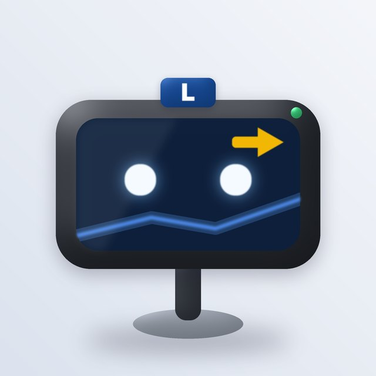

Curioso
Curioso ¡Bien!
¡Bien!
Explica Recalculando
Recalculando
My pick · Option 1
The sat nav
Turbo is the GPS on your dashboard, with glowing eyes on his screen. He knows the route, so he's the natural guide on a single road. A miss gets "Recalculando…" with spinning eyes, which is funny and never mean. Your Relanti stays the only car.
- Lives inside every car you pick, so he goes wherever you go
- The screen can also show the truco, a sign or an arrow
- Very clear at 40 px and as an app icon
 Utilitario
Utilitario Familiar
Familiar Furgo
Furgo